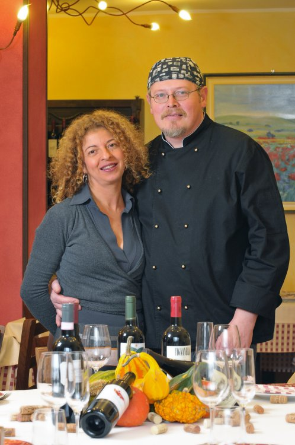

La storia
Vittorio Dalla Vecchia, patron de “Le Vecchie Credenze”, è nato a Valdagno nel 1966 e ha frequentato l'I.P.C. a Recoaro Terme, vicino a Vicenza. L'istituto fa parte dell'Associazione Europea delle scuole alberghiere e del turismo, istituita nel 1963.
Le origini del ristorante “Le Vecchie Credenze” sono particolari: Vittorio, dopo 10 anni di esperienze lavorative in alberghi italiani di prima categoria, giunge a Chieri. Qui trasforma un bar di vecchie tradizioni in un bel ristorante, dove inizialmente propone la sua cucina veneta. Poi rimane affascinato dalle ricette del territorio e, conquistato dai prodotti tipici piemontesi, inizia a promuovere esclusivamente le produzioni locali con un tocco di fantasia particolare tutto suo.
Dopo 18 anni a Chieri, Vittorio apre “Le Vecchie Credenze” a Santena, un paesino di 10000 abitanti circa.
